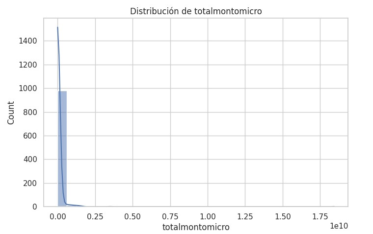

Ahorro con Metas es una aplicación educativa que ayuda a usuarios a definir metas de ahorro, calcular el aporte mensual requerido (con/sin interés compuesto) y visualizar la evolución del saldo mes a mes. Está pensada como herramienta para mejorar la educación financiera personal y facilitar la toma de decisiones.
El producto
La solución propuesta es una aplicación tanto de escritorio como web: "Ahorro con Metas" que permite crear metas con monto objetivo, plazo y opción de aplicar interés compuesto.
Servicios
Servicios que apoya: planificación financiera personal, simulación de escenarios, visualización de progreso, educación financiera básica.
Características principales
Cálculo automático de ahorro mensual necesario
Simulación con/sin interés compuesto
Tabla detallada mes a mes del progreso
Visualizaciones gráficas interactivas
Exportación de datos en múltiples formatos
Obtención del Dataset
Documentación del proceso de obtención de datos y pruebas. Aquí se describe cómo se registraron y generaron los datos de prueba usados.
Fuentes / método de obtención
Datos de usuario generados manualmente en pruebas
Simulaciones realizadas por el algoritmo interno para cada meta
Documentación visual
A continuación se presentan ejemplos de los datos generados durante las pruebas del sistema:
Descripción del Dataset
Composición
Conjunto de registros donde cada registro representa una meta de ahorro. Para cada meta se generan n filas (una por mes) con aportes y saldos acumulados.
Información general / Origen
Origen: datos de prueba (entrada del usuario) y datos generados por el proceso de simulación del algoritmo. No utiliza datos personales sensibles reales.
Visualización de datos públicos del portal datos.gov.co. Esta sección consume datos en tiempo real y genera gráficas interactivas.
Estado API
...
Registros
0
Última actualización
-
Configuración de API
Resumen de Datos
Cargue datos para ver el resumen...
Gráfica 1: Distribución por Categoría
Gráfica 2: Series de Tiempo
Gráfica 3: Comparativa (Top 10)
Tabla de Datos (Primeros 20 registros)
Documentación de la API
La API de datos.gov.co utiliza el estándar Socrata Open Data API (SODA). Para obtener datos:
// Ejemplo de URL
https://www.datos.gov.co/resource/[ID_DATASET].json
// Con filtros
https://www.datos.gov.co/resource/[ID_DATASET].json?$limit=1000
// Con selección de campos
https://www.datos.gov.co/resource/[ID_DATASET].json?$select=campo1,campo2
Parámetros útiles:
$limit: Número de registros a retornar (máx 50000)
$offset: Punto de inicio para paginación
$where: Filtros SQL-like (ej: year > 2020)
$order: Ordenamiento (ej: fecha DESC)
$select: Campos específicos a retornar
Descripción del Contexto
El sector
Sector terciario, área financiera. Incluye bancos, cooperativas, fintech y servicios de educación financiera. En Colombia, el sector financiero es un motor clave de inclusión y del crecimiento económico regional.
Su importancia
Este sector es crucial para el desarrollo económico, ya que impulsa la inversión, el consumo y el ahorro. Contribuye al crecimiento del empleo, financia proyectos de infraestructura y da soporte al sistema de pagos.
Impacto en la región
Tanto a nivel nacional como regional en departamentos como el Valle del Cauca, herramientas de educación financiera pueden mejorar acceso a productos de ahorro, incentivar emprendimiento y reducir la fragilidad financiera de hogares.
Necesidad - problema - idea de transformación
Problema: muchos usuarios no tienen herramientas sencillas para cuantificar y visualizar cómo alcanzar metas de ahorro. Idea: transformar la educación financiera ofreciendo una herramienta simple, local y replicable que facilite la toma de decisiones y fomente el hábito del ahorro.
Formularios de Datos
El sitio incluye un formulario principal para crear metas de ahorro. Campos obligatorios y validaciones están implementados en el frontend (HTML/JS).
Campos del formulario
Nombre de la meta (texto)
Monto objetivo (numérico, COP)
Plazo en meses (entero)
Aplicar interés (checkbox) y tasa mensual (%)
Validaciones
Validación de entradas no nulas, valores positivos y rangos razonables para el interés (0-100%). Mensajes de alerta para entradas inválidas.
El Producto de Datos
Producto generado: para cada meta se produce un paquete de datos que incluye el ahorro mensual requerido, la tabla mes a mes y el reporte gráfico.
Formatos de salida
CSV (tabla mes a mes)
JSON (registro de la meta y tabla)
Gráfica interactiva en la interfaz (Chart.js)
Py
Dashboard de Inclusión Financiera en Colombia
Visualización interactiva de datos de la API de Datos Abiertos de Colombia sobre inclusión financiera por género dada por Google Colab.

BI
Visualización con Power BI
Creación de dashboards interactivos para el análisis de informacion realacionada para la ayuda de la creacion de metas de ahorro utilizando Microsoft Power BI.
Pasos para importar datos
Exportar datos desde Python o CSV
Abrir Power BI Desktop
Obtener datos como Archivo CSV
Seleccionar el archivo exportado
Visualizaciones recomendadas
Gráfico de líneas
Gráfico de columnas apiladas
Tarjetas:
Tabla
Medidor
Dashboard obtenido
LS
Reportes con Looker Studio
Creación de reportes dinámicos y compartibles con Google Looker Studio (anteriormente Data Studio).
Conectar fuentes de datos
Subir CSV a Google Drive o Google Sheets
Acceder a Looker Studio (lookerstudio.google.com)
Crear → Informe
Agregar datos → Hojas de cálculo de Google o Subir archivo
Seleccionar la fuente y configurar campos
Componentes recomendados
Gráfico de series temporales
Tarjetas de resumen
Gráfico de área
Tabla con barras
Medidor radial
Dashboard
Nosotros
Proyecto académico desarrollado por estudiantes de la Universidad Libre Seccional Cali como parte de las asignaturas de Lógica, Algoritmos y Fundamentos de Programación.
Autores: Samuel Alejandro Ortiz Zambrano · Miguel Ángel Carmona Muñoz